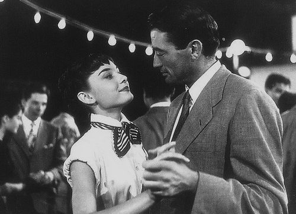
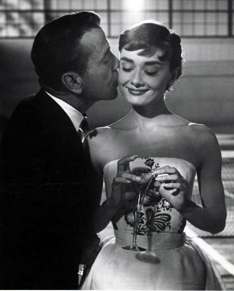
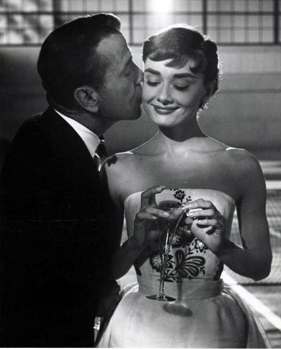
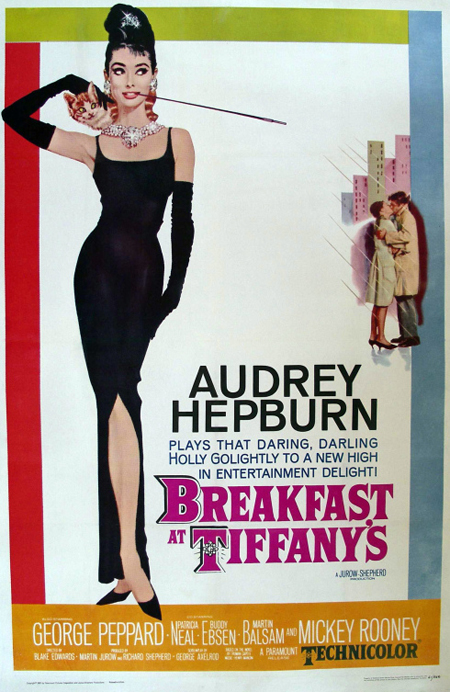

Roman Holiday (1953)
Audrey Hepburn first started acting in Roman Holiday, a film about a princess who falls in love with an American newsman. The film was a box office success. Her main co-star was Gregory Peck, a famous actor at the time. Despite critical feedback, Audrey won many awards, such as an Academy Award for Best Actress, a BAFTA Award for Best British Actress in a Leading Role, and a Golden Globe Award for Best Actress.
The "Roman Holiday" producers initially wanted Elizabeth Taylor for the role, but director William Wyler was so impressed by Audrey's screen test that he cast her instead. Wyler later commented, "She had everything I was looking for: charm, innocence, and talent. She also was very funny. She was absolutely enchanting and we said, 'That's the girl!' (Source: https://en.wikipedia.org/wiki/Audrey_Hepburn, retrieved on 17 September 2016)
Sabrina (1954)
Following her success in Roman Holiday, Audrey starred in Billy Wilder's romantic Cinderella-story comedy Sabrina, in which wealthy brothers (played by Humphrey Bogart and William Holden) compete for the affections of their chauffeur's innocent daughter, Sabrina, who is played by Audrey.
For her performance, she was nominated for the 1954 Academy Award for Best Actress while winning the BAFTA Award for Best Actress in a Leading Role the same year. Bosley Crowther of The New York Times stated that she was "a young lady of extraordinary range of sensitive and moving expressions within such a frail and slender frame. She is even more luminous as the daughter and pet of the servants' hall than she was as a princess last year, and no more than that can be said."(Source: https://en.wikipedia.org/wiki/Audrey_Hepburn, retrieved on 17 September 2016)
 

Breakfast at Tiffany's (1961)
Audrey next starred as New York call girl Holly Golightly in Blake Edwards's Breakfast at Tiffany's (1961), a film loosely based on the eponymous Truman Capote novella. Capote disapproved of many changes that were made to sanitise the story for the film adaptation, and would have preferred for Marilyn Monroe to have been cast in the role, although he also stated that Audrey "did a terrific job". (Source: https://en.wikipedia.org/wiki/Audrey_Hepburn, retrieved on 17 September 2016)
The character is considered one of the most iconic in American cinema, and a defining role for Audrey. The dress she wears during the opening credits is considered an icon of the twentieth century and perhaps the most famous "little black dress" of all time. Audrey stated that the role was "the jazziest of my career" yet admitted: "I'm an introvert. Playing the extroverted girl was the hardest thing I ever did." She was nominated for an Academy Award for Best Actress for her performance. (Source: https://en.wikipedia.org/wiki/Audrey_Hepburn,retrieved on 17 September 2016)